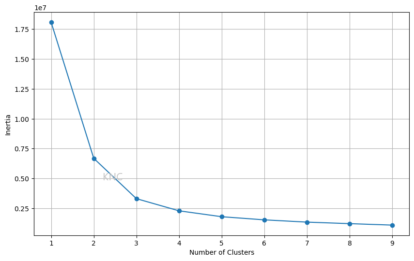
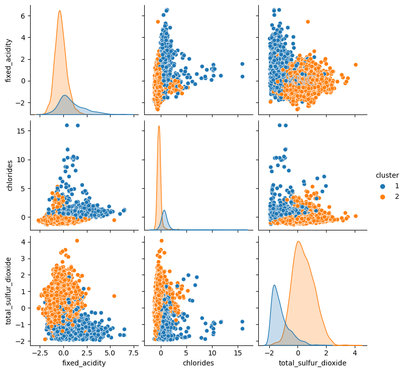

The following post goes over cluster number selection and distance metrics for two popular algorithms: K-means and Expectation-maximization (EM).
K-means initializes k number of clusters and then randomly selects points to be initial cluster centroids. Points are assigned to the nearest cluster based on a given distance metric. Then, the centroids are updated and the process continues until completion.
The default distance metric for k-means clustering is Euclidean distance. That being said, the algorithm can be changed to accommodate different feature types. For example, the kmodes package, which uses Hamming distance to reduce dissimilarity, can be used for categorical features [1]. Additionally, datasets with combinations of continuous and categorical features can use k-prototypes, which uses a combination of the two distance metrics [2]. If a dataset only has continuous features, k-means with Euclidean distance is appropriate.
For cluster selection, there are a few ways the number of clusters, k, can be chosen. The first is an inertia elbow plot. In this plot, the elbow point is chosen as the number of clusters. For example, in the plot below, a value of 2 or 3 might be chosen.
\A common issue with the inertia elbow plot is difficulty in finding a clear elbow plot. In cases where an inertia elbow plot is ineffective we can also consult silhouette score. Below is an example from the UCI Wine Dataset, where the ideal amount of clusters is 2 based on the silhouette score.
Using a value of 2 for k based on silhouette score, k-means clustering can be applied to the Wine dataset. Below, the resulting clustering is visualized using a pairplot of 3 important features.
Interestingly, the clustering looks very similar to the separation of red and white wines in the dataset. Note that the separation of red and white wines were not used as features for clustering, so this could be an indication that k-means is picking up on this distinction. In fact, when the ARI score is calculated between the labels of red and white wines and the KM clustering output, the score is 0.9422, indiciating that the k-means clustering and the ground truth clustering of red and white wines is extremely similar, signifying that the algorithm has found underlying structure in the data. In this case, ARI score has been used because it is a value between 0 and 1, making it easy to understand the relative performance of this clustering algorithm at separating red and white wines, but there are other similarity metrics available.
EM alternates between expectation and maximization with the goal of maximizing the likelihood function with the expected values calculated during the expectation step. EM, or specifically a Gaussian Mixture Model (GMM), is a probabilistic model using Gaussian distributions for data fitting that does not use distance metrics in the same way that k-means does. Instead of assigning samples to the nearest cluster using distance metrics, EM calculates the probability of a sample being in each cluster. In the implementation used here, Mahalanobis distance was used to estimate these probabilities. This distance metric is a popular choice because it can take covariance in the data into account, find ellipsoidal clusters, and is computationally efficient.
To select the number of clusters when using EM, there are three potential options. The first is to use silhouette score, the second is to use Bayesian Information Criterion (BIC) score, and the third is to use Akaike Information Criterion (AIC) score. BIC balances fit and complexity by penalizing models with more parameters to reduce overfitting. AIC also balances fit and complex- ity by penalizing models in a way that is less severe than BIC. Larger datasets might benefit from BIC since the BIC equation considers the number of samples in the dataset [3]. Below is an example of EM applied to a balanced subset of the UCI Covertype Dataset with PCA applied. In this case, the number of clusters chosen was 10 because both BIC and AIC suggested that 10 clusters would be best.
[1] Vinayedula. (2022). "K-Mode Clustering in Python." Geeks for Geeks.
https://www.geeksforgeeks.org/k-mode-clustering-in-python/.
[2] Library Reference. K-prototypes. https://kprototypes.readthedocs.io/en/latest/index.html.
[3] Brownlee, Jason. (2020). "Probabilistic Model Selection with AIC, BIC, and MDL." https://machinelearningmastery.com/probabilistic-model-selection-measures/.
Written by Kailey Cozart in May, 2024.